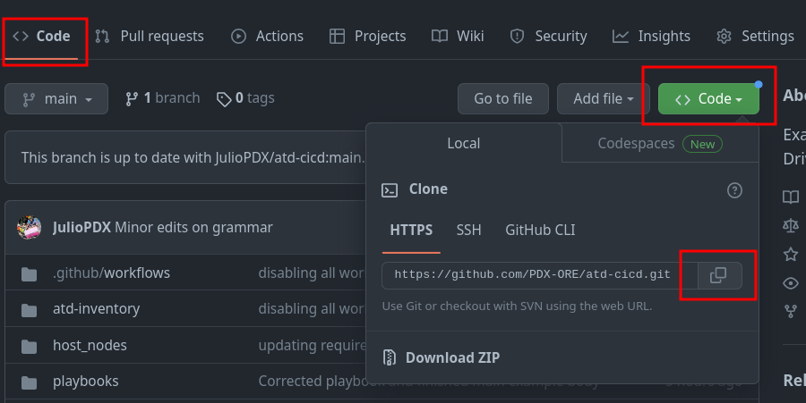

CI/CD¶
This section walks you through an example CI/CD pipeline leveraging GitHub Actions, Arista Validated Designs (AVD), and Arista CloudVision Platform (CVP). The lab leverages the Arista Test Drive (ATD) solution to give you a pre-built environment to get started quickly.
Readers should be familiar with the following concepts.
The topology¶
The dual data center ATD is deployed by default with many devices. The topology allows users to run examples like data center interconnect. In our case, we only require a subset of nodes. Devices from site 1 (s1) will act as our development infrastructure, and devices in site 2 (s2) will be our production infrastructure. The diagram below exemplifies what we hope to accomplish at the end of this workflow.
{kind=link}
Getting started¶
This repository leverages the dual data center (DC) ATD. If you are not leveraging the ATD, you may still leverage this repository for a similar deployment. Please note some updates may have to be made for the reachability of nodes and CloudVision (CVP) instances. This example was created with Ansible AVD version 3.8.1.
Local installation¶
You must install the base requirements if running outside of the ATD interactive developer environment (IDE).
python3 -m venv venv
source venv/bin/activate
ansible-galaxy collection install arista.avd arista.cvp --force
export ARISTA_AVD_DIR=$(ansible-galaxy collection list arista.avd --format yaml | head -1 | cut -d: -f1)
pip3 install -r ${ARISTA_AVD_DIR}/arista/avd/requirements.txt
ATD programmability IDE installation¶
You can ensure the appropriate AVD version is installed by running the following command.
If AVD version 3.8.1 or greater is not present, please upgrade to the latest stable version.
ansible-galaxy collection install arista.avd arista.cvp --force
export ARISTA_AVD_DIR=$(ansible-galaxy collection list arista.avd --format yaml | head -1 | cut -d: -f1)
pip3 config set global.disable-pip-version-check true
pip3 install -r ${ARISTA_AVD_DIR}/arista/avd/requirements.txt
Fork repository¶
You will be creating your own CI/CD pipeline in this workflow. Log in to your GitHub account and fork this repository to get started.
{kind=link}
{kind=link}
Enable GitHub actions¶
- Go to Actions
- Click
I understand my workflows, go ahead and enable them
{kind=link}
Set GitHub secret¶
You will need to set one secret in your newly forked GitHub repository.
- Go to
Settings - Click
Secrets and variables - Click
Actions -
Click
New repository secret -
Enter the secret as follows
- Name: PASS
-
Secret: Listed in ATD lab topology
-
Click
Add secret
{kind=link}
{kind=link}
{kind=link}
Note
Our workflow uses this secret to authenticate with our CVP instance.
Clone forked repository to ATD IDE¶
- Click
Code - Copy the HTTPS link

- From the IDE terminal, run the following
{kind=link}
Note
If the Git user.name and user.email are set, they may be skipped. You can check this by running the git config --list command.
Environment variables¶
This repository relies on one environment variable to be set, our login credentials. From the ATD IDE, run the following command.
Note
The value of PASS is the same secret used earlier. For example, export PASS=arista1234.
Create new branch¶
In a moment, we will be deploying changes to our environments. In reality, updates to a code repository would be done from a development or feature branch. We will follow this same workflow.
Note
This example will use the branch name of new-dc, if you use your own naming scheme, make sure to make the appropriate updates.
Update local CVP variables¶
Every user will get a unique CVP instance deployed. There are two updates required.
-
Update the
ansible_hostvariable undercv_atd1in theatd-inventory/dev/hosts.ymlfile -
Update the
ansible_hostvariable undercv_atd1in theatd-inventory/prod/hosts.ymlfile
Note
These will be the same value. Make sure to remove any prefix like https:// or anything after .com
Commit changes and link ATD IDE to GitHub¶
We have two changes in our hosts.yml files for production and development environments. The following can be executed from the terminal or GUI interface.
Note
You will get a notification to sign in to GitHub. Follow these prompts.
Enable GitHub actions workflows¶
GitHub actions allow us to automate almost every element of our repository. We can use them to check syntax, linting, unit testing, etc. In our case, we want to use GitHub actions to test new changes to our infrastructure and then deploy those changes. In this example, we simulate that Network Admins cannot manually change the nodes. Admins must execute changes from the pipeline.
In this repository, we have two workflow files located in our .github/workflows directory. Both workflows are identical but differ slightly in whether changes will be deployed in our development or production environment. Below is an example of the development workflow.
- In your IDE, uncomment both workflows. A shortcut is to highlight the workflow and type
Ctrl + /orCmd + /on Mac. - The files are located in the following locations.
atd-cicd/.github/workflows/dev_test.ymlatd-cicd/.github/workflows/prod_test.yml
name: Test the dev network
on:
push:
branches-ignore:
- main
jobs:
test-deploy-dev:
env:
net: dev
PASS: ${{ secrets.PASS }}
timeout-minutes: 15
runs-on: ubuntu-latest
steps:
- name: Hi
run: echo "Hello World!"
- name: Checkout
uses: actions/checkout@v3
- name: yaml-lint
uses: ibiqlik/action-yamllint@v3
with:
file_or_dir: atd-inventory/dev/group_vars/ atd-inventory/dev/host_vars/
config_file: .yamllint.yml
- name: Start containers
run: docker-compose -f "docker-compose.yml" up -d --build
- name: Test with Batfish
run: docker-compose run atd-cicd python3 batfish-test.py
- name: Push configurations to dev
run: docker-compose run atd-cicd ansible-playbook playbooks/atd-fabric-provision.yml
- name: Stop containers
if: always()
run: docker-compose -f "docker-compose.yml" down
This workflow is relatively short but represents some interesting options. For starters, we set branches-ignore to main. Since we are testing our feature or development branches, we don't want this to run on main, representing our production environment. We set two environment variables, one to specify if this is dev or prod. We then pass along our PASS variable, which represents the credentials to connect to our CVP instance.
The steps¶
The initial checkout step makes the repository available to our workflow. We then use Docker Compose to stand up two containers. One to run the Batfish service and a small container with all pre-installed requirements. The second container interacts with the running Batfish service and our CVP instance. If we did not have the second container available, we would have to run through the exact steps you ran to prepare your environment in this workflow. The second container allows us to speed up our workflow. Below is an example of the docker-compose.yml file.
---
version: '3.3'
services:
batfish:
container_name: batfish
volumes:
- '.:/data'
ports:
- '9997:9997'
- '9996:9996'
image: batfish/batfish
atd-cicd:
container_name: atd-cicd
volumes:
- '.:/app'
image: juliopdx/atd-cicd
environment:
- PASS=$PASS
- net=$net
A note on Batfish¶
In case you need to become more familiar with Batfish. It's an open-source tool from Intentionet. The idea is operators can create their configurations in whatever workflows fit their environment. The configurations can then be sent to the Batfish service for analysis. The checks are all performed offline without connecting to our network devices. For example, we could check things like compatible BGP and OSPF neighbors. The checks are far more extensive than these, and we encourage you to check out their documentation. The diagram below helps illustrate this idea.
{kind=link}
In the Docker Compose file mentioned earlier, we use this Batfish service in our workflow. We then use the pybatfish Python package as our connector into this service to run any checks or ask the service questions about the network. Once these checks pass, we configure the infrastructure using the eos_config_deploy_cvp role within the AVD collection.
Migrate from OSPF to BGP underlay¶
At the moment, this example deployment is using OSPF for the underlay. We want to migrate from OSPF to BGP. We have to make two minor updates to our group variables for development and production. In the atd-inventory/dev/group_vars/ATD_FABRIC_DEV.yml file, we have the variable underlay_routing_protocol set to OSPF. We can comment this out and leverage the default underlay of BGP used in AVD DC deployments.
Perform the same for the atd-inventory/prod/group_vars/ATD_FABRIC_PROD.yml file.
At this point, we can build the intended configurations for both environments. The first command defaults to the dev inventory, and the second has to be specified on the command line.
# Dev
ansible-playbook playbooks/atd-fabric-build.yml
# Prod
ansible-playbook playbooks/atd-fabric-build.yml -i atd-inventory/prod/hosts.yml
Note
You don't have to specify the inventory when interacting with the development environment because this is the default inventory in our ansible.cfg file.
Feel free to check out the changes made to your local files. Please make sure the GitHub workflows are uncommented. We can now push all of our changes and submit a pull request.
Note
The GitHub workflows are located in the atd-cicd/.github/workflows directory.
Viewing actions¶
If you navigate back to your GitHub repository, you should see an action executing.
- Click
Actions - Click on the latest action
As this is executing, on your CVP instance, you should see new containers and tasks that will be executed.
{kind=link}
Creating a pull request to deploy main (production)¶
We have activated our GitHub workflows, tested our configurations in our development environment, and pushed those changes to our nodes. We are now ready to create a pull request.
In your GitHub repository, you should see a tab for Pull requests.
- Click on
Pull requests - Click on
New pull request - Change the base repository to be your fork
- Change the compare repository to
new-dc - Click
Create pull request
{kind=link}
{kind=link}
{kind=link}
Add a title and enough of a summary to get the point across to other team members.
{kind=link}
Once this is complete, click Create pull request. Since all checks have passed, we can merge our new pull request.
{kind=link}
{kind=link}
At this point, this will kick off our second workflow against the main branch. This is our production instance. If you go back to Actions, you can see this executing. Alternatively, you can see the updates running on CVP.
{kind=link}
Summary and bonus¶
Congratulations, you have successfully deployed a development and production instance. Feel free to make additional changes or extend the testing pieces.
Note
If your topology shut down or time elapsed, you must run through the requirement installations and GitHub authentication on the next git push.
Simple test with hosts (optional)¶
In reality, AVD does not manage hosts. In this topology, hosts are just cEOS nodes. We have a playbook that will configure host1 from each environment. Again, to cut down on the number of devices for this example, the two hosts will be configured with two VRFs to send traffic across the network. An example of the configuration and execution command is below.
vrf instance BLUE
!
vrf instance RED
!
no ip routing vrf BLUE
no ip routing vrf RED
!
interface Ethernet1
no switchport
vrf BLUE
ip address 10.10.10.1/24
!
interface Ethernet2
no switchport
vrf RED
ip address 10.10.10.2/24
!
From the ATD IDE, execute the following playbook.
Once these tasks complete in CVP, you can connect to either s1-host1 or s2-host1 and test reachability.
s1-host1# ping vrf BLUE 10.10.10.2
PING 10.10.10.2 (10.10.10.2) 72(100) bytes of data.
80 bytes from 10.10.10.2: icmp_seq=1 ttl=64 time=31.0 ms
80 bytes from 10.10.10.2: icmp_seq=2 ttl=64 time=26.6 ms
80 bytes from 10.10.10.2: icmp_seq=3 ttl=64 time=18.8 ms
80 bytes from 10.10.10.2: icmp_seq=4 ttl=64 time=11.1 ms
80 bytes from 10.10.10.2: icmp_seq=5 ttl=64 time=10.8 ms
--- 10.10.10.2 ping statistics ---
5 packets transmitted, 5 received, 0% packet loss, time 57ms
rtt min/avg/max/mdev = 10.898/19.729/31.089/8.114 ms, pipe 4, ipg/ewma 14.488/24.842 ms
s1-host1#
s1-host1#show interfaces | include Ethernet|Hardware
Ethernet1 is up, line protocol is up (connected)
Hardware is Ethernet, address is 02d2.56bf.117c (bia 02d2.56bf.117c)
Ethernet2 is up, line protocol is up (connected)
Hardware is Ethernet, address is 9e60.6f70.7324 (bia 9e60.6f70.7324)
In this case, we can see Ethernet1 has a MAC address that ends with 117c, and Ethernet2 has a MAC address that ends with 7324. We can check where those MAC addresses were seen from the perspective of s1-leaf1.
s1-leaf1#show mac address-table
Mac Address Table
------------------------------------------------------------------
Vlan Mac Address Type Ports Moves Last Move
---- ----------- ---- ----- ----- ---------
110 02d2.56bf.117c DYNAMIC Et4 1 0:07:02 ago
110 9e60.6f70.7324 DYNAMIC Vx1 1 0:07:02 ago
1199 001c.73c0.c613 DYNAMIC Vx1 1 0:56:15 ago
Total Mac Addresses for this criterion: 3
Multicast Mac Address Table
------------------------------------------------------------------
Vlan Mac Address Type Ports
---- ----------- ---- -----
Total Mac Addresses for this criterion: 0
s1-leaf1#
We can see the MAC ending in 117c is connected to Ethernet 4 and the MAC ending in 7324 was seen on the VXLAN interface. We have successfully communicated through the fabric. Thank you for following along with this example. If you have any feedback or would like to report an issue/error, please open an issue on the main GitHub repository.